Proposed curriculum and textbooks
for a
Free Progress University faculty
in the
Conceptual Foundations of Theoretical Physics
Mathematical basics
What
follows is a selection of textbooks that will accompany you throughout a five-year faculty.
Precalculus course
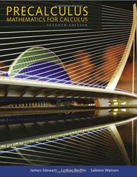If you are well prepared with high
school math you may eventually skip this course. In case you are acquainted
with exponential or polynomial functions, logarithms, trigonometry, able to
solve systems of linear equations, know hot to handle graphs, vector calculus
and geometry, having a basic understanding of sequences and series, etc., then
thats fine. However, if your knowledge is not firmly grounded in these
matters, then make yourself a favour! Take this course. Indeed, many begin to
study math in college having already forgotten (or never learned) most of the
high school basics. The net result is that the calculus course, despite
furnishing the most fundamental mathematical tools for physics at an elementary
level, already becomes a frustrating experience. Some students blame for that
professors who become guilty of not having explained clearly enough the
subject. Learn to become aware where your strengths and weaknesses are,
otherwise dont blame others for your own faults! So, a precalculus course has
precisely this function. To make the calculus course less cryptic and a lot
more smoother.
Here
you begin all over again with the abc you learned
from the elementary school onwards (yes, from the multiplication and division,
sets, fractions, etc.).
Proposed
textbook for this course:
Precalculus: Mathematics for
Calculus, by James Stewart, Lothar Redlin and Saleem Watson -
Brooks Cole; 7 edition (January 1, 2015). About 930 pages.
Calculus course
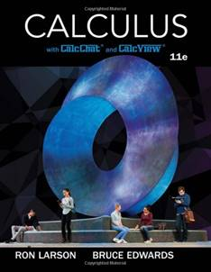Prerequisite: Pre-calculus
So,
here one starts with the real mathematical stuff every
professional physicist, with no exceptions, needs to know about. Differential
and integral calculus, vector analysis, series and an
introduction to differential equations, just to mention some of the
mathematical pillars of every serious physicists. You will have to apply this
almost everywhere. Differential equations tell us how particles move under the
action of forces, or describe electromagnetic fields (e.g., Maxwells
equations), planets move, elementary particles behave, etc. Vector analysis is
ubiquitous in physics since lots of quantities are vectors (momenta, electric
and magnetic fields, spin of particles, etc.), since after all we live in a 3D
space (or 4D space-time). So, calculus stands to physics, like a highway stands
to transportation means like cars. Contrary to what people might believe, math
makes physics easier, not more complex.
Proposed
textbook for this course:
Calculus, by Ron Larson and Bruce H. Edwards - Brooks Cole; 11
edition (January 1, 2017). About 1200 pages.
Course on linear algebra
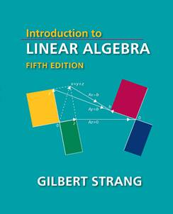Prerequisite: Pre-calculus
Linear
algebra and geometry is a classic of mathematics everyone has
to go through. It prepares the grounds especially for quantum mechanics
(QM) but also a lot for classical mechanics where matrices, determinants and
solving for linear equations are quite often required. Especially linear
transformations, matrix operators, the eigenvalue and eigenvector calculation
introduce you to concepts without which, mathematically speaking, you wont be
able to do almost nothing in QM.
Proposed
textbook for this course:
Introduction
to Linear algebra, by Gilbert Strang - Wellesley-Cambridge Press; 5 edition (11 Aug 2016). About 600 pages.
You
might find it useful to complement this textbook with Strangs online MIT course.
Course on statistics and error
analysis
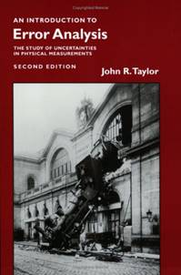Prerequisite: Calculus
Uncertainties
and its propagation, normal distributions, weighted averages, least-square
fitting, binomial and Poisson distribution will help
you to understand how to treat uncertainty in physics. The world is not ideal
as described by our ideal theories and principles. Nevertheless, it is possible
to treat it as such if you know how to deal with measurement errors,
fluctuating data, and need to know averages or orders of magnitudes of a physical phenomena, without the
need to know exact numbers. Statistical concepts will also pave the way for the
course in QM and, of course, statistical physics.
Proposed
textbook for this course:
Introduction
To Error Analysis: The Study of Uncertainties in
Physical Measurements, by John R. Taylor - University Science Books; 2nd ed. (14
July 1997). About 280 pages.
Mathematical methods of physics
course
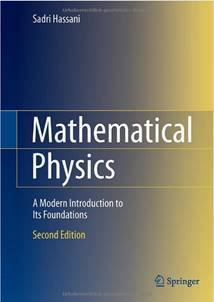Prerequisite: Calculus and linear
geometry
This
is the true mathematical stuff theoretical physicists work with, and which
might distinguish itself from what the conventional mathematician learn.
For
example, operator algebra, Hilbert spaces, group theory and Lie groups, Fourier
series and transforms are highly recommended before beginning a course in QM.
If you have these basics already before going into QM, then you will be able to
appreciate it in its fullest.
Complex
analysis and second order linear differential equations are something you might
need from studying water waves to QFT.
Then,
it was the lack of knowledge of things like differential geometry and tensor
analysis that blocked Einstein for several years before being able to frame the
theory of general relativity. These are beautiful mathematical tools, without
which you wont be able to go beyond special relativity.
Other
topics, like for instance calculus of variations, will show you how calculus is
not an optional, but opens the way to new understandings how theories from
classical mechanics and beyond can be framed alternatively.
Proposed
textbook for this course: Mathematical
Physics: A Modern Introduction to Its Foundations, by Sadri Hassani
- Springer; 2nd ed. 2013 edition (19 Aug 2013). About 1180 pages.
Theoretical
physics foundations
Course on classical mechanics
Prerequisites: Calculus and linear
geometry (mathematical methods might help but not vital).
There
is a quite widespread misunderstanding regarding classical Galilean and
Newtonian physics, according to which it is all wrong and outdated, since it has been replaced by QM and relativity. Nothing is so far
from truth as that! Classical mechanics was and remains the number one bedrock
of all physical science. One cant even begin to reason in QM and relativity
without relying heavily on the formulation of classical concepts.
Newtons
laws, conservation principles, the equations of motion, statics and dynamics,
the physics of rigid bodies, and oscillations, are all chapters of classical
physic that describe the physical world we are accustomed to extremely well.
Calculus of variations, Euler-Lagranges equations, will prepare you to the one
aspect of the formalism in QFT and the recent advancements in nonlinear
mechanics and chaos theory, are the proof that classical mechanics is alive and
well.
This
is the course that stands to physics as an engine stands to a car. You wont be
able to go far without that.
Proposed
textbook for this course:
Classical
Mechanics, by John R. Taylor - Univ Science
Books; null edition (January 1, 2005). About 730 pages.
Course on Electrodynamics
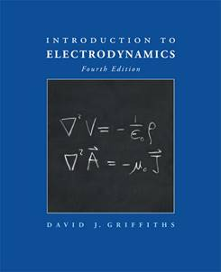Prerequisites: Calculus, linear
geometry, classical mechanics (mathematical methods might help but not vital).
Classical electrodynamics is the
continuation of classical mechanics applied to charged particles or bodies under
the influence of electromagnetic (EM) force fields.
Electrostatics and magnetostatics, fields
in matter, EM waves, radiation and Maxwells equations and many other aspects
of the EM force are treated here in a classical, non-quantum manner and remain
the pillars for every understanding of how this force act in our macro- as
microscopic world (as even atomic or nuclear structure) and led also to many
practical applications like in electronics. Nature is not only mechanical but
also electric, here you learn how to combine the two.
Proposed
textbook for this course:
Introduction
to Electrodynamics , by David J.
Griffiths - Pearson; 4 edition (October
6, 2012). About 580 pages
Course on Thermodynamics and
statistical physics
Prerequisites: Calculus, linear geometry, classical
mechanics, statistics and error analysis.
Electrodynamics and mathematical methods might be very helpful. Special
relativity and quantum physics will become 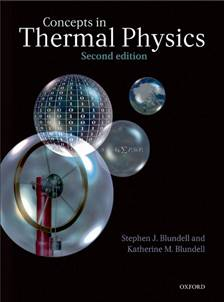essential in a last part when
dealing with relativistic and quantum gases (dividing the course in two parts
might therefore be an idea).
The
good old science of thermodynamics and its development into its alter-ego,
statistical physics, is something that pops up here and there in many and
diverse chapters of physics, sometimes in unexpected vestiges (e.g. in black
hole physics). It has also its classical as quantum counterparts. The laws of
thermodynamics, the concept of heat, probability, temperature
and thermal equilibrium are a conceptual foundation that acquire a more
profound meaning in the kinetic theory of gases. Maxwell-Boltzmann
distributions, entropy, information theory and the ubiquitous partition
function furnish a conceptual foundation for several domains of physics. Also,
relativistic and quantum gases (especially the famous Bose-Einstein
condensation) and non-equilibrium thermodynamics will introduce you to its more
modern aspects.
Proposed
textbook for this course:
Concepts in Thermal Physics,
by Stephen J. Blundell and Katherine M. Blundell - Oxford University
Press; 2 edition (November 30, 2009). About 460 pages.
Course in Special and General
Relativity
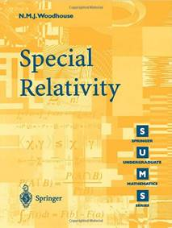Prerequisites: Calculus, linear
geometry, classical mechanics, Electrodynamics. Tensor calculus and
differential geometry from mathematical methods.
Special relativity (SR) is an extension of
classical mechanics and classical electrodynamics (not something which negates
it, as unfortunately many tend to believe). Thats why it could be a good idea
to start from the classical concept of Galilean relativity and see how Einstein
arrived from the propagation of light and Maxwells theory to his theoretical masterpiece.
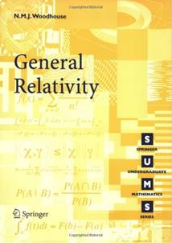With
Lorentz transformations and relativistic electrodynamics
one is introduced to the four-vector formalism and tensor algebra you will find
all over the place in advanced theoretical physics.
It took Einstein 10 years to extend
further SR to general relativity (GR). It is here where the scholar learns how
physics and geometry meet together in a fascinating grand-scheme The energy momentum tensor, geodesics, curved space-time,
Einsteins equations, are wonderful and powerful examples for that. Black
holes, gravitational waves, cosmological models, are the logical consequence
that modern science is still investigating today.
Proposed textbooks for this course:
Special Realtivity,
by N. M. J. Woodhouse, Springer (April 2, 2007). About 190 pages.
General Realtivity,
by N. M. J. Woodhouse, Springer; 1st ed. (June 2, 2010). About 220 pages.
Course in Quantum Mechanics
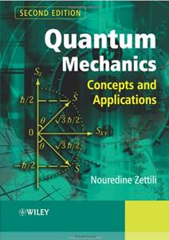Prerequisites: Calculus, linear
geometry, classical mechanics, Electrodynamics. Most of mathematical methods
(except tensor analysis and differential geometry). Thermodynamics and
statistical physics helps.
Here
begins the long journey into the weird quantum world. So many things have been
said about QM, and so many tremendously misleading and not seldom completely false, that every serious inquirer who wants to
avoid these misunderstandings must necessarily take this course and follow it
step by step.
One
begins from the historical origins, goes through the pedagogical introduction
of the well-known wave-particle duality and begins to
learn how to tackle with the quantum world at the mathematical level (operator
theory, group theory, symmetries, etc.) which are the necessary tools to treat
physical quantities like the quantum angular momentum up to atomic physics and
to tackle with problems as the square well potential up to perturbation and
scattering theory.
QM
is not easy stuff and you will need dedication, patience
and lots of time to grasp it. But the effort it is worth it!
Proposed
textbooks for this course:
Quantum
Mechanics: Concepts and Applications, by Nouredine
Zettili - Wiley; 2 edition (February 24, 2009). About
660 pages.
Course on Relativistic quantum
mechanics and the standard model of particle physics
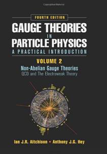Prerequisites: all the above!
If
you have gone through all the previous courses here you reach the top of the
pyramid of the known and established theoretical physics, and which is summed
up in the standard model of particle physics (SM).
It
begins with a first attempt to reconcile SR with QM, i.e. relativistic quantum
mechanics and Quantumelectrodynamics (QED), where the
EM field is treated inside a Gauge theory. Feynman rules and diagrams,
perturbation theory, renormalization theory and symmetries lead to quantumchromodynamics (QCD) which unifies EM with strong
nuclear forces and the Glashow-Salam-Weinberg theory and the Higgs boson
furnish the remaining theoretical frame to include electroweak interactions.
Thats
how far current physics is capable to say something for sure. If you want to go
beyond, you will have to stand on the shoulders of the giants who built this
colossal theoretical construct of human mind.
Proposed
textbooks for this course:
Gauge
Theories in Particle Physics: A Practical Introduction, by Ian J.R. Aitchison and
Anthony J.G. Hey - CRC Press; 4 edition (December 17, 2012) - 2 Volumes. About
960 pages.